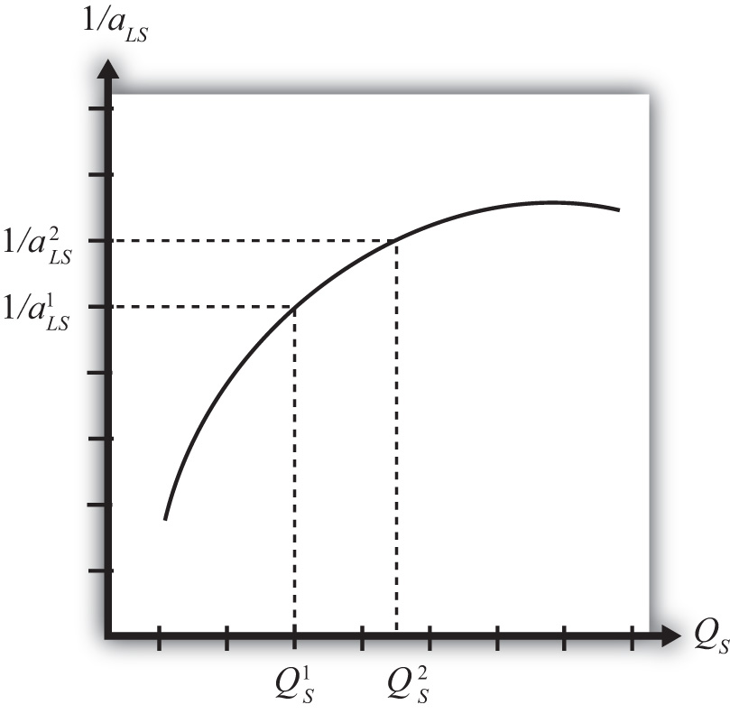
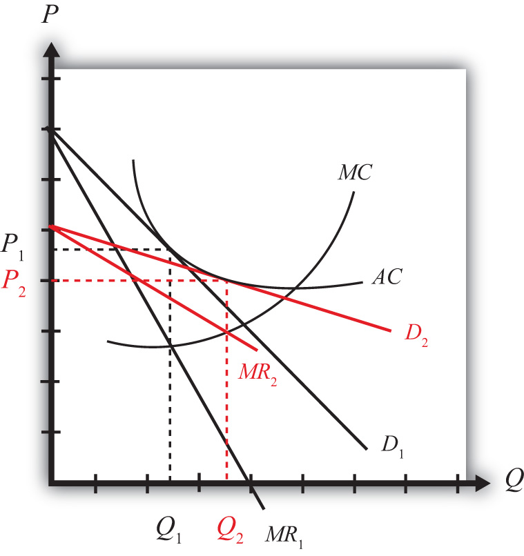

One important motivation for international trade is the efficiency improvements that can arise because of the presence of economies of scale in production. Although economists wrote about these effects long ago, models of trade developed after the 1980s introduced economies of scale in creative new ways and became known as the “New Trade Theory.”
In this chapter, the barest essentials of economies of scale models are developed to explain the rationale for trade with this production feature. The chapter also presents the monopolistic competition model of trade that incorporates an obvious feature of the real world—namely, the presence of heterogeneous goods.
Another major reason that international trade may take place is the existence of economies of scale (also called increasing returns to scale) in production. Economies of scaleThe feature of many production processes in which the per-unit cost of producing a product falls as the scale of production rises. means that production at a larger scale (more output) can be achieved at a lower cost (i.e., with economies or savings). When production within an industry has this characteristic, specialization and trade can result in improvements in world productive efficiency and welfare benefits that accrue to all trading countries.
Trade between countries need not depend on country differences under the assumption of economies of scale. Indeed, it is conceivable that countries could be identical in all respects and yet find it advantageous to trade. For this reason, economies-of-scale models are often used to explain trade among countries like the United States, Japan, and the European Union. For the most part, these countries, and other developed countries, have similar technologies, similar endowments, and to some extent similar preferences. Using classical models of trade (e.g., Ricardian, Heckscher-Ohlin), these countries would have little reason to engage in trade. Yet trade between the developed countries makes up a significant share of world trade. Economies of scale can provide an answer for this type of trade.
Another feature of international trade that remains unexplained with classical models is the phenomenon of intraindustry trade. A quick look at the aggregate trade data reveals that many countries export and import similar products. For example, the United States imports and exports automobiles, imports and exports machine tools, imports and exports steel, and so on. To some extent, intraindustry trade arises because many different types of products are aggregated into one category. For example, many different types of steel are produced, from flat-rolled to specialty steels. It may be that production of some types of steel requires certain resources or technologies in which one country has a comparative advantage. Another country may have the comparative advantage in another type of steel. However, since all these types are generally aggregated into one export or import category, it could appear as if the countries are exporting and importing “identical” products when in actuality they are exporting one type of steel and importing another type.
Nevertheless, it is possible to explain intraindustry trade in a model that includes economies of scale and differentiated products even when there are no differences in resources or technologies across countries. This model is called the monopolistic competition model. Its focus is on consumer demand for a variety of characteristics embodied in the goods sold in a product category. In this model, advantageous trade in differentiated products can occur even when countries are very similar in their productive capacities.
Jeopardy Questions. As in the popular television game show, you are given an answer to a question and you must respond with the question. For example, if the answer is “a tax on imports,” then the correct question is “What is a tariff?”
Economies of scale in production means that production at a larger scale (more output) can be achieved at a lower cost (i.e., with economies or savings). A simple way to formalize this is to assume that the unit labor requirement in the production of a good is a function of the level of output produced. In Figure 6.1 "Unit-Labor Requirement with Economies of Scale", we present a graph of the unit labor requirement in steel production as a function of the scale (level of output) of production. At production level QS1, the unit labor requirement is given by aLS1. If production were to rise to QS2, then the unit labor requirement would fall to aLS2. This means that at the higher level of output, it requires less labor (i.e., fewer resources or a lower cost) per unit of output than it required at the smaller scale.
Figure 6.1 Unit-Labor Requirement with Economies of Scale

A secondary assumption is that the additional savings (or economies) fall as the scale increases. Graphically, this means that the slope of the curve in Figure 6.1 "Unit-Labor Requirement with Economies of Scale" becomes less negative as the scale of production (output) rises. Economists sometimes refer to this feature by saying the function is concave to the origin; that is, it is bowed inward. The reason this assumption is made is because it seems to correspond to what is observed in the world. We expect that the degree of cost savings will be largest in the earliest stages of production, when labor division is likely to be the easiest and most effective. This assumption, although a realistic feature, is not necessary to explain trade, however.
With a simple adjustment, it is possible to show that increasing returns to scaleThe feature of many production processes in which the productivity of a product increases as the scale of production rises. in production means that an increase in resource usage by, say, x percent results in an increase in output by more than x percent. In Figure 6.2 "Productivity with Increasing Returns to Scale", we plot labor productivity in steel production when production exhibits increasing returns to scale. This curve is derived by plotting the reciprocal of the unit labor requirement (i.e., 1/aLS) for each output level in Figure 6.2 "Productivity with Increasing Returns to Scale".
Figure 6.2 Productivity with Increasing Returns to Scale
Note that as output (scale) increases from QS1 to QS2, labor productivity (given by the reciprocal of the unit labor requirement) also rises. In other words, output per unit of labor input increases as the scale of production rises, hence increasing returns to scale.
Another way to characterize economies of scale is with a decreasing average cost curve. Average costs, AC, are calculated as the total costs to produce output Q, TC(Q), divided by total output. Thus AC(Q) = TC(Q)/Q. When average costs decline as output increases, it means that it becomes cheaper to produce the average unit as the scale of production rises, hence resulting in economies of scale.
Economies of scale are most likely to be found in industries with large fixed costs in production. Fixed costs are those costs that must be incurred even if production were to drop to zero. For example, fixed costs arise when large amounts of capital equipment must be put into place even if only one unit is to be produced and if the costs of this equipment must still be paid even with zero output. In this case, the larger the output, the more the costs of this equipment can be spread out among more units of the good. Large fixed costs and hence economies of scale are prevalent in highly capital-intensive industries such as chemicals, petroleum, steel, automobiles, and so on.
It is worth noting that the assumption of economies of scale in production can represent a deviation from the assumption of perfectly competitive markets. In most perfectly competitive models, it is assumed that production takes place with constant returns to scale (i.e., no economies). This means that the unit cost of production remains constant as the scale of production increases. When that assumption is changed, it can open up the possibility of positive profits and strategic behavior among firms. Because there are numerous ways to conceive of strategic interactions between firms, there are also numerous models and results that could be obtained. To avoid some of these problems, a number of models have been developed that retain some of the key features of perfect competition while allowing for the presence of economies of scale as well.
Jeopardy Questions. As in the popular television game show, you are given an answer to a question and you must respond with the question. For example, if the answer is “a tax on imports,” then the correct question is “What is a tariff?”
The main reason the presence of economies of scale can generate trade gains is because the reallocation of resources can raise world productive efficiency. To see how, we present a simple example using a model similar to the Ricardian model.
Suppose there are two countries, the United States and France, producing two goods, clothing and steel, using one factor of production, labor. Assume the production technology is identical in both countries and can be described with the production functions in Table 6.1 "Production of Clothing".
Table 6.1 Production of Clothing
| United States | France |
|---|---|
|
where QC = quantity of clothing produced in the United States LC = amount of labor applied to clothing production in the United States aLC = unit labor requirement in clothing production in the United States and France (hours of labor necessary to produce one rack of clothing) ∗All starred variables are defined in the same way but refer to the production process in France. |
|
Note that since production technology is assumed to be the same in both countries, we use the same unit labor requirement in the U.S. and French production functions.
Production of steel. The production of steel is assumed to exhibit economies of scale in production (see Table 6.2 "Production of Steel").
Table 6.2 Production of Steel
| United States | France |
|---|---|
|
where QS = quantity of steel produced in the United States LS = amount of labor applied to steel production in the United States aLS(QS) = unit labor requirement in steel production in the United States (hours of labor necessary to produce one ton of steel) ∗All starred variables are defined in the same way but refer to the production process in France. |
|
Note that it is assumed that the unit labor requirement is a function of the level of steel output in the domestic industry. More specifically, we will assume that the unit labor requirement falls as industry output rises.
Resource constraint. The production decision is how to allocate labor between the two industries. We assume that labor is homogeneous and freely mobile between industries. The labor constraints are given in Table 6.3 "Labor Constraints".
Table 6.3 Labor Constraints
| United States | France |
|---|---|
| LC + LW = L | |
|
where L = labor endowment |
|
When the resource constraint holds with equality, it implies that the resource is fully employed.
Demand. We will assume that the United States and France have identical demands for the two products.
We proceed much as David Ricardo did in presenting the argument of the gains from specialization in one’s comparative advantage good. First, we will construct an autarky equilibrium in this model assuming that the two countries are identical in every respect. Then we will show how an improvement in world productive efficiency can arise if one of the two countries produces all the steel that is demanded in the world.
Suppose the exogenous variables in the two countries take the values in Table 6.4 "Initial Exogenous Variable Values".
Table 6.4 Initial Exogenous Variable Values
| United States | aLC = 1 | L = 100 |
| France | L∗ = 100 |
Let the unit labor requirement for steel vary as shown in Figure 6.3 "Economies of Scale: Numerical Example". The graph shows that when fifty tons of steel are produced by the economy, the unit labor requirement is one hour of labor per ton of steel. However, when 120 tons of steel are produced, the unit labor requirement falls to half an hour of labor per ton of steel.
Figure 6.3 Economies of Scale: Numerical Example

The United States and France, assumed to be identical in all respects, will share identical autarky equilibria. Suppose the equilibria are such that production of steel in each country is fifty tons. Since at fifty tons of output, the unit labor requirement is one, it means that the total amount of labor used in steel production is fifty hours. That leaves fifty hours of labor to be allocated to the production of clothing. The production of clothing has a unit labor requirement of one also, meaning that the total output of clothing is fifty racks. The autarky production and consumption levels are summarized in Table 6.5 "Autarky Production/Consumption".
Table 6.5 Autarky Production/Consumption
| Clothing (Racks) | Steel (Tons) | |
|---|---|---|
| United States | 50 | 50 |
| France | 50 | 50 |
| World Total | 100 | 100 |
The problem with these initial autarky equilibria is that because demands and supplies are identical in the two countries, the prices of the goods would also be identical. With identical prices, there would be no incentive to trade if trade suddenly became free between the two countries.
Despite the lack of incentive to trade in the original autarky equilibria, we can show, nevertheless, that trade could be advantageous for both countries. All that is necessary is for one of the two countries to produce its good with economies of scale and let the other country specialize in the other good.
For example, suppose we let France produce 120 tons of steel. This is greater than the 100 tons of world output of steel in the autarky equilibria. Since the unit labor requirement of steel is one-half when 120 tons of steel are produced by one country, the total labor can be found by plugging these numbers into the production function. That is, since QS∗ = LS∗/aLS∗, QS∗ = 120 and aLS∗ = ½, it must be that LS∗ = 60. In autarky, it took 100 hours of labor for two countries to produce 100 tons of steel. Now it would take France 60 hours to produce 120 tons. That means more output with less labor.
If France allocates its remaining forty hours of labor to clothing production and if the United States specializes in clothing production, then production levels in each country and world totals after the reallocation of labor would be as shown in Table 6.6 "Reallocated Production".
Table 6.6 Reallocated Production
| Clothing (Racks) | Steel (Tons) | |
|---|---|---|
| United States | 100 | 0 |
| France | 40 | 120 |
| World Total | 140 | 120 |
The important result here is that it is possible to find a reallocation of labor across industries and countries such that world output of both goods rises. Or in other words, there is an increase in world productive efficiency.
If output of both goods rises, then surely it must be possible to find a terms of trade such that both countries would gain from trade. For example, if France were to export sixty tons of steel and import thirty racks of clothing, then each country would consume seventy units of clothing (twenty more than in autarky) and sixty tons of steel (ten more than in autarky).
The final conclusion of this numerical example is that when there are economies of scale in production, then free trade, after an appropriate reallocation of labor, can improve national welfare for both countries relative to autarky. The welfare improvement arises because concentrating production in the economies-of-scale industry in one country allows one to take advantage of the productive efficiency improvements.
Some features of the economies-of-scale model make it very different from the other models of trade, such as the Ricardian or Heckscher-Ohlin models. For example, it is possible to show that countries that are identical in every respect might nevertheless find it advantageous to trade. Thus it is not always differences between countries that stimulate trade. In this case, it is a feature of the production process (i.e., economies of scale) that makes trade gains possible.
Second, this economies-of-scale model cannot predict which country would export which good. It doesn’t matter which country produces all the economies-of-scale good. As long as one country does so and trades it with the rest of the world, trade gains are possible. Also, it may not matter whether your country ends up producing the economies-of-scale good or not because both countries will realize the benefits as long as an appropriate terms of trade arises.
Despite these differences with other models, the main similarity is that gains from trade arise because of an improvement in productive efficiency. By reallocating resources between industries within countries, it is possible to produce more output with the same amount of resources. This remains the prime motivation in support of free trade.
Suppose there are two countries with the same production technologies. Let labor productivity in butter production be ten pounds per hour at all levels of output and productivity in gun production be one-half of a gun per hour when gun production is less than ten and two-thirds of a gun per hour when production is ten or more. Suppose each country has fifty hours of labor and in autarky produces eight guns.
Next, suppose Country A produces all the guns in the world while Country B specializes in butter production.
Monopolistic competitionA market structure that is a cross between the two extremes of perfect competition and monopoly. refers to a market structure that is a cross between the two extremes of perfect competition and monopoly. The model allows for the presence of increasing returns to scale in production and for differentiated (rather than homogeneous or identical) products. However, the model retains many features of perfect competition, such as the presence of many, many firms in the industry and the idea that free entry and exit of firms in response to profit would eliminate economic profit among the firms. As a result, the model offers a somewhat more realistic depiction of many common economic markets. The model best describes markets in which numerous firms supply products that are each slightly different from that supplied by its competitors. Examples include automobiles, toothpaste, furnaces, restaurant meals, motion pictures, romance novels, wine, beer, cheese, shaving cream, and much more.
The model is especially useful in explaining the motivation for intraindustry tradeTrade between countries that occurs within the same industry; for example, when a country exports and imports automobiles.—that is, trade between countries that occurs within an industry rather than across industries. In other words, the model can explain why some countries export and import automobiles simultaneously. This type of trade, although frequently measured, is not readily explained in the context of the Ricardian or Heckscher-Ohlin models of trade. In those models, a country might export wine and import cheese, but it would never export and import wine at the same time.
The model demonstrates not only that intraindustry trade may arise but also that national welfare can be improved as a result of international trade. One reason for the improvement in welfare is that individual firms produce larger quantities, which, because of economies of scale in production, leads to a reduction in unit production costs. This means there is an improvement in productive efficiency. The second reason welfare improves is that consumers are able to choose from a greater variety of available products with trade as opposed to autarky.
Jeopardy Questions. As in the popular television game show, you are given an answer to a question and you must respond with the question. For example, if the answer is “a tax on imports,” then the correct question is “What is a tariff?”
A monopolistically competitive market has features that represent a cross between a perfectly competitive market and a monopolistic market (hence the name). The following are some of the main assumptions of the model:
The differentiated products are imperfectly substitutable in consumption. This means that if the price of one good were to rise, some consumers would switch their purchases to another product within the industry. From the perspective of a firm in the industry, it would face a downward-sloping demand curve for its product, but the position of the demand curve would depend on the characteristics and prices of the other substitutable products produced by other firms. This assumption is intermediate between the perfectly competitive assumption in which goods are perfectly substitutable and the assumption in a monopoly market in which no substitution is possible.
Consumer demand for differentiated products is sometimes described using two distinct approaches: the love-of-variety approach and the ideal variety approach. The love-of-variety approach assumes that each consumer has a demand for multiple varieties of a product over time. A good example of this would be restaurant meals. Most consumers who eat out frequently will also switch between restaurants, one day eating at a Chinese restaurant, another day at a Mexican restaurant, and so on. If all consumers share the same love of variety, then the aggregate market will sustain demand for many varieties of goods simultaneously. If a utility function is specified that incorporates a love of variety, then the well-being of any consumer is greater the larger the number of varieties of goods available. Thus the consumers would prefer to have twenty varieties to choose from rather than ten.
The ideal variety approach assumes that each product consists of a collection of different characteristics. For example, each automobile has a different color, interior and exterior design, engine features, and so on. Each consumer is assumed to have different preferences over these characteristics. Since the final product consists of a composite of these characteristics, the consumer chooses a product closest to his or her ideal variety subject to the price of the good. In the aggregate, as long as consumers have different ideal varieties, the market will sustain multiple firms selling similar products. Therefore, depending on the type of consumer demand for the market, one can describe the monopolistic competition model as having consumers with heterogeneous demand (ideal variety) or homogeneous demand (love of variety).
These main assumptions of the monopolistically competitive market show that the market is intermediate between a purely competitive market and a purely monopolistic market. The analysis of trade proceeds using a standard depiction of equilibrium in a monopoly market. However, the results are reinterpreted in light of these assumptions. Also, it is worth mentioning that this model is a partial equilibrium model since there is only one industry described and there is no interaction across markets based on an aggregate resource constraint.
Jeopardy Questions. As in the popular television game show, you are given an answer to a question and you must respond with the question. For example, if the answer is “a tax on imports,” then the correct question is “What is a tariff?”
Assume that there are two countries, each with a monopolistically competitive industry producing a differentiated product. Suppose initially that the two countries are in autarky. For convenience, we will assume that the firms in the industry are symmetric relative to the other firms in the industry. Symmetry implies that each firm has the same average and marginal cost functions and that the demand curves for every firm’s product are identical, although we still imagine that each firm produces a product that is differentiated from all others. (Note that the assumptions about symmetry are made merely for tractability. It is much simpler to conceive of the model results when we assume that all firms are the same in their essential characteristics. However, it seems likely that these results would still be obtained even if firms were asymmetric.)
In Figure 6.4 "Firm Equilibrium in Monopolistic Competition", we depict a market equilibrium for a representative firm in the domestic industry. The firm faces a downward-sloping demand curve (D1) for its product and maximizes profit by choosing that quantity of output such that marginal revenue (MR1) is equal to marginal cost (MC). This occurs at output level Q1 for the representative firm. The firm chooses the price for its product, P1, that will clear the market. Notice that the average cost curve (AC) is just tangent to the demand curve at output Q1. This means that the unit cost at Q1 is equal to the price per unit—that is, P1 = AC(Q1), which implies that profit is zero. Thus the firm is in a long-run equilibrium since entry or exit has driven profits to zero.
Figure 6.4 Firm Equilibrium in Monopolistic Competition

Keep in mind that this is the equilibrium for just one of many similar firms producing in the industry. Also imagine that the foreign market (which is also closed to trade) has a collection of firms that are also in a long-run equilibrium initially.
Next, suppose whatever barriers to trade that had previously existed are suddenly and immediately removed—that is, suppose the countries move from autarky to free trade. The changes that ultimately arise will be initiated by the behavior of consumers in the market. Recall that market demand can be described using a love-of-variety approach or an ideal variety approach.
In the love-of-variety approach, the removal of trade barriers will increase the number of varieties consumers have to choose from. Since consumer welfare rises as the number of varieties increases, domestic consumers will shift some of their demand toward foreign varieties, while foreign consumers will shift some of their demand toward domestic varieties.
In the ideal variety approach, some domestic consumers will likely discover a more ideal variety produced by a foreign firm. Similarly, some foreign consumers will find a more ideal variety produced by a domestic firm.
In either case, domestic demand by domestic consumers will fall, while domestic demand by foreign consumers will rise. Similarly, foreign demand by foreign consumers will fall, while foreign demand by domestic consumers will rise. Note that this is true even if all the prices of all the goods in both countries are initially identical. In terms of Figure 6.4 "Firm Equilibrium in Monopolistic Competition", trade will cause the demand curve of a representative firm to shift out because of the increase in foreign demand but will cause the demand curve to shift back in because of the reduction in domestic demand. Since these two effects push the demand curve in opposite directions, the final effect will depend on the relative sizes of these effects.
Regardless of the size of these effects, the removal of trade barriers would cause intraindustry trade to arise. Each country would become an exporter and an importer of differentiated products that would be classified in the same industry. Thus the country would export and import automobiles, toothpaste, clothing, and so on. The main cause of this result is the assumption that consumers, in the aggregate at least, have a demand for variety.
However, two effects can be used to isolate the final equilibrium after trade is opened. First, the increase in the number of varieties available to consumers implies that each firm’s demand curve will become more elastic (or flatter). The reason is that consumers become more price sensitive. Since there are more varieties to choose from, a $1 increase in price of one variety will now lead more consumers to switch to an alternative brand (since there are more close substitutes available), and this will result in a larger decrease in demand for the original product. Second, free entry and exit of firms in response to profits will lead to a zero-profit equilibrium for all remaining firms in the industry.
Figure 6.5 Firm Equilibrium Before and After Trade
The final equilibrium for the representative firm is shown in Figure 6.5 "Firm Equilibrium Before and After Trade". Keep in mind that these same effects are occurring for every other firm in the industry, both domestically and in the foreign country. The demand curve shifts from D1 to D2 and the marginal revenue from MR1 to MR2 as a result of trade. The firm’s cost curves remain the same. Entry or exit of firms causes the final demand curve to be tangent to the firm’s average cost curve, but since the demand curve is more elastic (or flatter), the tangency occurs down and to the right of the autarky intersection. In the end, firm output rises from Q1 to Q2 and the price charged in the market falls from P1 to P2. Although individual firm output rises for each firm, we cannot tell in this model setup whether industry output has risen. In the adjustment to the long-run zero-profit equilibrium, entry (or more likely exit) of firms would occur. If some firms exit, then it remains uncertain whether fewer firms, each producing more output, would raise or lower industry output.
Jeopardy Questions. As in the popular television game show, you are given an answer to a question and you must respond with the question. For example, if the answer is “a tax on imports,” then the correct question is “What is a tariff?”
Welfare of individual consumers who purchase the representative product will be enhanced for three main reasons. First, trade increases the number of varieties of products for consumers to choose from. Second, free trade reduces the price of every variety sold in the market. Third, free trade may increase the supply of products in other markets and result in lower prices for those products.
If the product is such that an individual consumer seeks to purchase a product closest to her ideal variety, then presumably with more varieties available, more consumers will be able to purchase more products closer to their ideal. For these consumers welfare will be improved. Other consumers, however, may not be affected by the increase in varieties. If, for example, the new varieties that become available are all more distant from one’s ideal than the product purchased in autarky, then one would continue to purchase the same product in free trade. In this case, the increase in variety does not benefit the consumer.
If the product is one in which consumers purchase many different varieties over time (love of variety), then because trade will increase the number of varieties available to each consumer, trade will improve every consumer’s welfare. Of course, this is based on the assumption that every consumer prefers more varieties to less. Thus regardless of whether the product is characterized by the ideal variety or the love-of-variety approach, free trade, by increasing the number of varieties, will increase aggregate consumer welfare.
There are two potential costs of free trade in this model. The first involves the potential costs of adjustment in the industry. The second involves the possibility that more varieties will increase transaction costs. Each cost requires modification of the basic assumptions of the model in a way that conforms more closely with the real world. However, since these assumption changes are not formally included in the model, the results are subject to interpretation.
Before we argued that because trade increases the number of varieties available to each consumer, each consumer is more likely to find a product that is closer to his or her ideal variety. In this way, more varieties may increase aggregate welfare. However, the increase in the number of varieties also increases the cost of searching for one’s ideal variety. More time will now be needed to make a careful evaluation. One could reduce these transaction costs by choosing to evaluate only a sample of the available products. However, in this case, a psychological cost might also arise because of the inherent uncertainty about whether the best possible choice was indeed made. Thus, welfare would be diminished among consumers to the extent that there are increased transaction costs because of the increase in the number of varieties to evaluate.
The welfare effects under the basic assumptions of the model are entirely positive. Improvements in productive efficiency arise as firms produce further down along their average cost curves in free trade. Consumption efficiency is raised because consumers are able to buy the products at lower prices and have a greater variety to choose from.
Potential costs arise in the model only if we introduce the additional assumptions of adjustment costs or transactions costs. The net welfare effect in the presence of adjustment and transactions costs will still be positive if the production and consumption efficiency effects are larger.
Jeopardy Questions. As in the popular television game show, you are given an answer to a question and you must respond with the question. For example, if the answer is “a tax on imports,” then the correct question is “What is a tariff?”